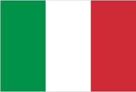

- 意大利国旗
- 意大利国徽
- 意大利标志性建筑
- 意大利地理位置
意大利概况
意大利位于欧洲南部, 主要由靴子型的亚平宁半岛和两个位于地中海中的大岛西西里岛和萨丁岛组成。
人口概况
意大利的人均GDP为35435美元(2009年数据), 2001年全国就业总人数2151.4万,新增就业岗位43.4万,同比增长2.1%。其中农业人口112.6万, 同比增长0.6%；工业人口684.1万,同比增长1.1%；建筑业人口170.7万, 同比增长5.5%；服务业人口1354.8万, 同比增长2.7%；失业人数206.1万, 占9.5%。
意大利经济
四分之三的能源供给和主要工业原料依赖国外进口, 而产品的1/3以上供出口。历史上意国家参与制企业比较发达。伊利、埃尼和埃菲姆曾是三大国营财团, 在全国工业产值中约占1/3, 经营范围涉及钢铁、造船、机械、石油、化工、军火等部门。上个世纪90年代以来, 政府加快了国有企业私有化进程。中小企业在意经济中占有重要地位, 在制革、制鞋、服装、纺织、家具、厨房设备、瓷砖、丝绸、首饰、酿酒、机械、大理石开采及机械工业等领域有较大优势, 具有专业化程度高、适应能力强、产品出口比例大等特点。意原油加工能力居世界第六, 年炼油量约 1亿吨。2001年粗钢产量为2670万吨, 塑料和拖拉机产量均居世界第六, 发电量居世界第九。近几年, 意注意开发以电子工业为主的新兴科技产业。目前, 信息和通讯技术行业占国民生产总值的6.2%。
外交关系
意对外政策的基本点是立足西欧, 积极推动欧洲一体化进程, 主张欧洲应有共同的外交和防务政策；依靠北约, 重视同美国的传统关系；强调建立公正合理的国际新秩序, 主张世界多极化和加强地区性合作；认为联合国应在世界新格局中发挥主导作用。
经贸往来
对外贸易是意经济的主要支柱。外贸产值占据意大利GDP40%以上。各种个人消费品、机器机械设备以及资本商品在世界市场占据非常重要的地位。意大利曾经是世界最大的贸易顺差国之一，年顺差在百亿美元以上，但自本世纪初，由于欧元坚挺，能源价格飞涨，以及产业结构僵化原因，逐渐沦为贸易逆差国。2011年意大利贸易逆差297亿欧元，但扣除能源开支后仍为顺差。中国是意大利最大贸易逆差来源国，意大利对中国贸易逆差达200亿欧元（2011），意大利产品在世界仍然有较强竞争力，出口商品种类非常齐全。主要以机械仪器、汽车、农产品加工、钢铁、化工化学、制药、家用电器、服装、制鞋、贵重金属等工业制成品为主。意国外市场主要为欧盟国家，对其出口量占总量一半以上。意大利对世界其他地区市场出口份额逐渐加大，出口欧盟占出口总份额逐渐缩小。俄罗斯、日本、中国、巴西、美国、越南、北非、中东、南非等国家和地区都是意国非欧盟国家中重要贸易伙伴。意大利为全球十大外贸国之一，年进出口贸易总额长期稳定在世界第七至八位，意大利2011年货物以及服务出口额为3757.19亿欧元，进口4000.52亿欧元。贸易总额占世界贸易总额3%~3.5%。